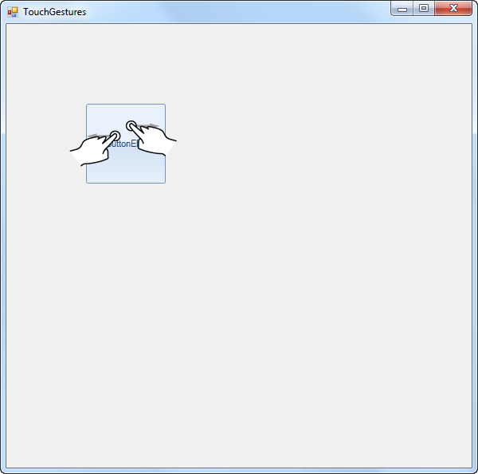
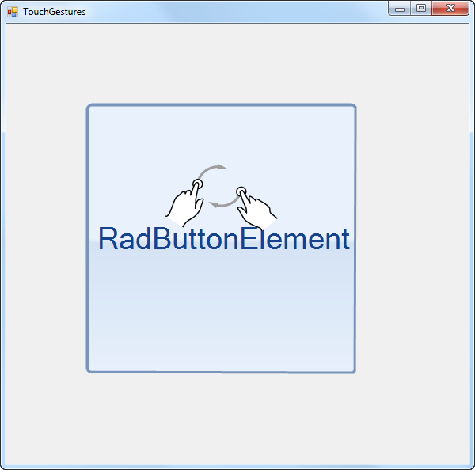
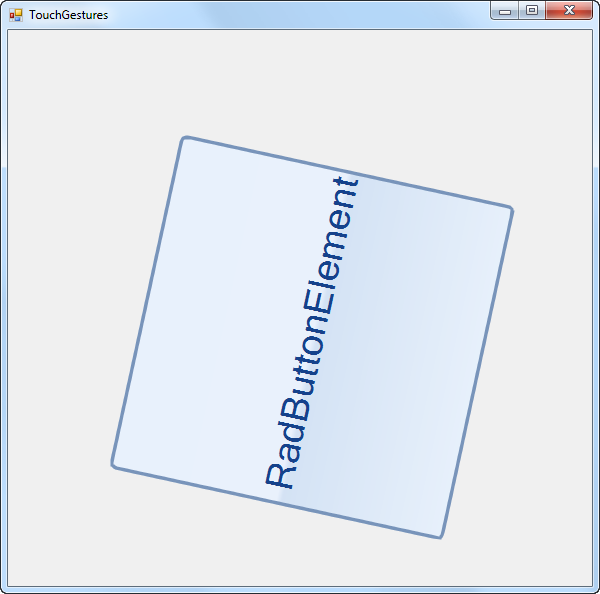

Touch Support
The Telerik UI for WinForms suite provide full multi-touch support.
All controls in the suite are exposing several events which grant the developer
the ability to easily handle gestures on a touch input device.
This functionality is currently supported under Windows7 and Windows8 Developer Preview
Some of the controls in our suite have built-in functionality that responds to touch gestures.
For example, you can use the Pan gesture to scroll through the RadGridView’s rows,
group by a column or change the order of its columns.
Similar functionality is available out-of-the-box for RadTreeView,
RadListView, RadPropertyGrid, RadListControl, RadCarousel and RadCommandBar. Additionally,
the developer can use the gesture events to implement his custom logic.
Touch Events in RadControls
To enable or disable a gesture,
use the EnableGesture and DisableGesture functions
passing a member of the GestureType enumerator:
All
Pan
Rotate
Zoom
TwoFingerTap
PressAndTap
[C#] Cascade layout example
this.radButton1.EnableGesture(GestureType.All);
this.radButton1.DisableGesture(GestureType.Zoom);
[VB.NET] Cascade layout example
Me.radButton1.EnableGesture(GestureType.All)
Me.radButton1.DisableGesture(GestureType.Zoom)
'#End Region
End Sub
End Class
An explanation of the different gestures can be found in
this MSDN article
.
You can use the following events to handle gesture events:
PanGesture:
Fires when the user slides with his finger across the area of the control.ZoomGesture:
Fires when the user slides with his two fingers in opposite directions.RotateGesture:
Fires when the user slides with his two fingers in a circular direction.TwoFingerTapGesture:
Fires when the user taps the screen with his two fingers at the same time.PressAndTapGesture:
Fires when the user has pressed the screen with a finger and taps with a second finger.
All these events provide event arguments that inherit from the GestureEventArgs type, hence the share the following properties:
IsBegin:
Indicates that the gesture is starting.IsEnd:
Indicates that the gesture is ending.IsInertia:
Indicates that the event is caused by inertia.Location:
Indicates the location in control coordinates at which the gesture has occurred.Handled:
Indicates if the event has already been handled by some of the elements in the control.Item 2
The inheritors of this type also provide gesture-specific arguments like Offset, ZoomFactor, Angle etc.
Touch Events in RadItems
All the above mentioned events are also valid for all RadItems.
This means you can use them
for different items in RadRibbonBar, RadCommandBar, RadMenu, etc.
Example of Using Touch Events
The following example will demonstrate how we can use this functionality to drag,
rotate and resize RadButtonElement within a simple panel:
[C#]
public class CustomPanel : RadControl
{
public class CustomPanelLayout : Telerik.WinControls.Layouts.LayoutPanel
{
}
public CustomPanel()
{
this.EnableGesture(GestureType.All);
}
CustomPanelLayout m_layout;
RadButtonElement button;
protected override void CreateChildItems(RadElement parent)
{
base.CreateChildItems(parent);
m_layout = new CustomPanelLayout();
parent.Children.Add(m_layout);
button = new RadButtonElement();
button.AutoSize = false;
button.Size = new Size(100, 100);
button.Location = new Point(100, 100);
button.Text = "RadButtonElement";
this.m_layout.Children.Add(button);
button.PanGesture += new PanGestureEventHandler(button_PanGesture);
button.ZoomGesture += new ZoomGestureEventHandler(button_ZoomGesture);
button.RotateGesture += new RotateGestureEventHandler(button_RotateGesture);
}
void button_RotateGesture(object sender, RotateGestureEventArgs e)
{
button.AngleTransform -= (float)(e.Angle * 180D / Math.PI);
}
void button_ZoomGesture(object sender, ZoomGestureEventArgs e)
{
button.ScaleTransform = new SizeF(
(float)(button.ScaleTransform.Width * e.ZoomFactor),
(float)(button.ScaleTransform.Height * e.ZoomFactor));
}
void button_PanGesture(object sender, PanGestureEventArgs e)
{
button.Location = new Point(button.Location.X + e.Offset.Width, button.Location.Y + e.Offset.Height);
}
}
[VB.NET]
Public Class CustomPanel
Inherits RadControl
Public Class CustomPanelLayout
Inherits Telerik.WinControls.Layouts.LayoutPanel
End Class
Public Sub New()
Me.EnableGesture(GestureType.All)
End Sub
Private m_layout As CustomPanelLayout
Private button As RadButtonElement
Protected Overrides Sub CreateChildItems(ByVal parent As RadElement)
MyBase.CreateChildItems(parent)
m_layout = New CustomPanelLayout()
parent.Children.Add(m_layout)
button = New RadButtonElement()
button.AutoSize = False
button.Size = New Size(100, 100)
button.Location = New Point(100, 100)
button.Text = "RadButtonElement"
Me.m_layout.Children.Add(button)
AddHandler button.PanGesture, AddressOf button_PanGesture
AddHandler button.ZoomGesture, AddressOf button_ZoomGesture
AddHandler button.RotateGesture, AddressOf button_RotateGesture
End Sub
Private Sub button_RotateGesture(ByVal sender As Object, ByVal e As RotateGestureEventArgs)
button.AngleTransform -= CSng(e.Angle * 180.0R / Math.PI)
End Sub
Private Sub button_ZoomGesture(ByVal sender As Object, ByVal e As ZoomGestureEventArgs)
button.ScaleTransform = New SizeF(CSng(button.ScaleTransform.Width * e.ZoomFactor), CSng(button.ScaleTransform.Height * e.ZoomFactor))
End Sub
Private Sub button_PanGesture(ByVal sender As Object, ByVal e As PanGestureEventArgs)
button.Location = New Point(button.Location.X + e.Offset.Width, button.Location.Y + e.Offset.Height)
End Sub
End Class
Thanks to the code above, the end-user will be able to do the following operations with his/her fingers:
Similar functionality is also used in the PhotoAlbum demo application